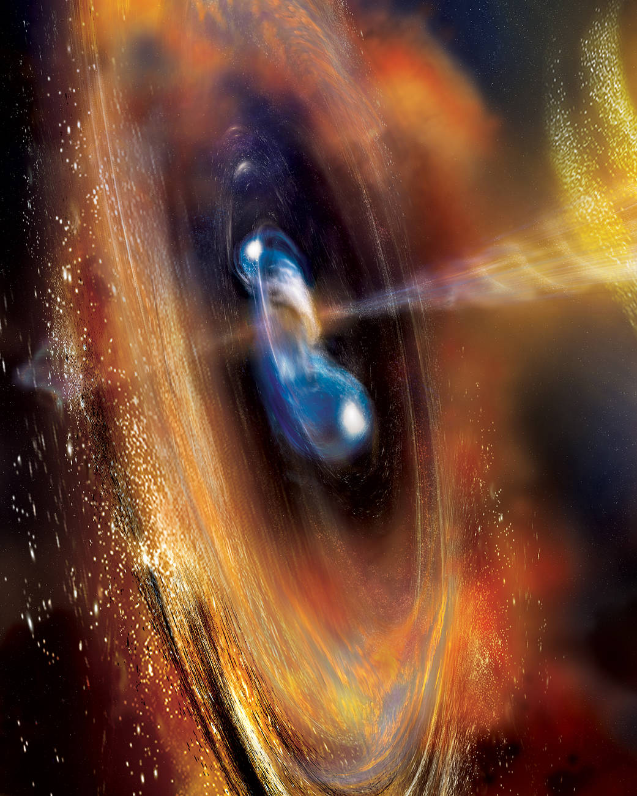

The Fermi Gamma-ray Space Telescope, commonly known as Fermi, is a pivotal space observatory developed by NASA to study the universe in the gamma-ray spectrum. Launched in 2008, Fermi has been instrumental in probing the most energetic phenomena in the cosmos, from supermassive black holes to pulsars and gamma-ray bursts.
Gamma rays, being the highest-energy form of light, provide unique insights into the extreme processes of the universe. Fermi's Large Area Telescope (LAT) and its Gamma-ray Burst Monitor (GBM) work in tandem to scan the entire sky every three hours, capturing a comprehensive view of the gamma-ray universe. This has allowed Fermi to detect thousands of gamma-ray sources and provide crucial data on phenomena like active galactic nuclei, supernova remnants, and neutron stars.
Over the years, Fermi has made numerous groundbreaking discoveries, including insights into the nature of gamma-ray bursts, the detection of a new class of gamma-ray-only pulsars, and mapping the gamma-ray glow at the center of our galaxy. With an initial mission cost of approximately $690 million, Fermi's contributions to high-energy astrophysics have been invaluable. As it continues its observations, the Fermi Gamma-ray Space Telescope stands as a testament to our drive to understand the universe's most energetic and mysterious events.
 Next